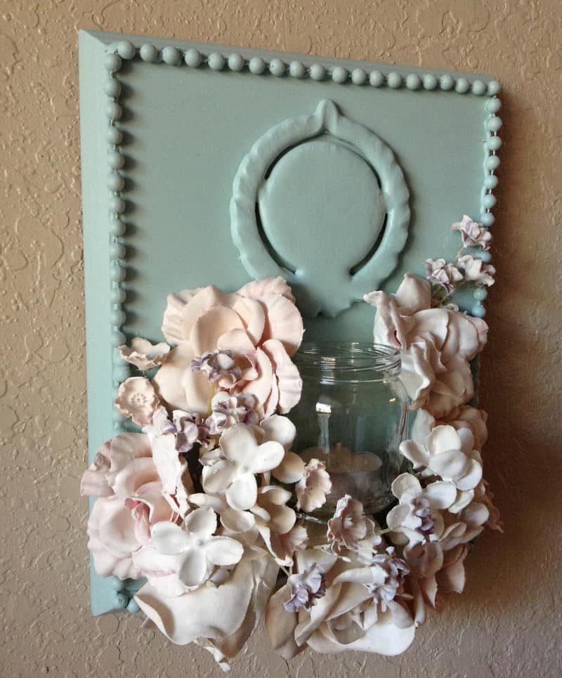

Rozvoz květin Praha a celá ČR - KvětinyOnline.cz
 Váš prohlížeč není podporován. Doporučujeme použít nejnovější Chrome, Firefox nebo Safari. Menu kvetiny@kvetinyonline.cz +420 602 686 696 Měna: EUR , USD Jazyk: EN , RU Přihlásit se VyhledatSpecialisté na rozvoz květin po Praze i celé ČR
Doručení květin v oblastech Praha a okolí realizujeme do 2 hodin od objednávky.
0 Kč Úvodní strana Květiny Dle ceny Cena do 500 Kč Cena 500-1000 Kč Cena nad 1000 Kč Dle příležitosti Valentýn Pro zamilované Pro radost Slavnostní Poděkování Pro maminku K narozeninám K svátku Pro muže Smuteční Sestavit kytici Dle druhu Růže Gerbery Lilie Chryzantémy Valentýn MagazínDůvody proč si nechat doručit květinu od nás
Expresní dodání do několika hodin Rozvoz květin po Praze do 2 hodin Dovoz po celé ČR Více než 70 000 předaných kytic Vždy zaručeně čerstvé květiny 15 let zkušeností a prémiové služby Jak funguje
rozvoz květin?
Zjistit více
V případě požadavku na doručení květiny v období od 12. do 15. února (svátek sv. Valentýna) doporučujeme zadat objednávku ještě dnes. Naše možnosti nejsou neomezené .Nejpopulárnější květiny
Ohnivý šarm
K doručení dnes po celé ČR 1 357 KčSerenáda
K doručení dnes po celé ČR 2 779 KčKvětinový koktejl
K doručení dnes po celé ČR 2 192 KčElegantní
K doručení dnes po celé ČR 1 989 KčSvůdná
K doručení dnes po celé ČR 2 837 KčRanní rosa
K doručení dnes po celé ČR 1 589 KčPro Tvé oči
K doručení dnes po celé ČR 499 KčSmyslná
K doručení dnes po celé ČR 1 995 KčOdraz slunce
K doručení dnes po celé ČR 2 735 KčLáska
K doručení dnes po celé ČR 2 375 Kč ... všechny květinyOblíbené kategorie
Pro zamilované 99 aranží K doručení po celé ČR Z růží 225 aranží K doručení po celé ČR Slavnostní 158 aranží K doručení po celé ČR Do 1 000 Kč 35 aranží K doručení po celé ČR Do 500 Kč 15 aranží K doručení po celé ČR Pro radost 162 aranží K doručení po celé ČRNaposledy zakoupené kytice
Hvězdné nebe
Zakoupeno před 8 minutami 1 183 KčJsi mi vzácná
Zakoupeno před 16 minutami 1 154 KčElegantní
Zakoupeno před 25 minutami 1 989 KčNespoutaná
Zakoupeno před 27 minutami 1 248 KčRubín
Zakoupeno před 47 minutami 670 KčChci Ti udělat radost
Zakoupeno před 49 minutami 599 KčI love you
Zakoupeno před 1 hodinou 1 295 KčSvůdná
Zakoupeno před 1 hodinou 2 837 KčPro Tvé oči
Zakoupeno před 1 hodinou 499 KčSmyslná
Zakoupeno před 1 hodinou 1 995 Kč ... všechny květinyCo o nás říkají naši zákazníci
Já žiju v zahraničí a posílám přes tento obchod květiny své rodině a známým. Vždy jsem velmi spokojená s objednávkou a příjemci ještě více. Velice jednoduché stránky na navigovani a objednání.
Sonik77 05.02.2021
+ Uzasna komunikace a splneni jakychkoliv prani zakaznika.
Je mile mit kvetinarstvi na ktere se muzete spolehnout, ze udela radost kytickou kor kdyz jsem daleko od domova!
Linda 28.01.2021
Objednávka byla vyřízena okamžitě, bez zdržení. Cením si toho, zvláště proto, že se jednalo o pohřební kytici a obřadu jsme se nemohli zúčastnit z důvodu vládních nařízení.
Ověřený zákazník 25.01.2021
... další recenze na Heureka.czNejnovější články z našeho magazínu
Víte, jaké květiny darovat k Valentýnu?
Růže jsou klasika, ale co takhle darovat třeba tulipány? Zjistěte, proč Valentýn slavíme a jaké květiny udělají vaší milé radost.
Jak potěšit ženu na svatého Valentýna
Den svatého Valentýna se blíží, nezapomeňte své milé vyjádřit lásku. Darujte ji třeba pěknou kytici.
Pěstování minirůží doma v květináči
Milovníci růží, kteří nemají zahradu nemusí zoufat. Minirůže jsou krásné a vhodné pro pěstování v květináči nebo truhlíku.
... další článkyNáš tým - příběh květin
Naše květinářství jsme otevřeli v roce 2003 a jako jedni z prvních v Česku jsme začali nabízet rozvoz květin po Praze a celé ČR. Dnes s námi spolupracuje více než 300 spolehlivých kolegů, kteří vám doručují čerstvé květiny po celé republice. ... více o nás
Rozvážíme květiny po celé ČR
Praha Brno Ostrava Plzeň Liberec Olomouc Ústí nad Labem Hradec Králové České Budějovice Pardubice Havířov Další města Jak fungujerozvoz květin? Zjistit více
Rozvoz květin po Praze a celé ČR - nejsnazší způsob jak udělat radost
Jste na služební cestě, v práci nebo na dovolené? Má vám blízká osoba výročí, nebo jen jí chcete překvapit? Pak služba dovoz květin je přesně to pravé.
Vyberte si kytici v katalogu a případně přidejte láhev sektu nebo sladkou bonboniéru. Nezapomeňte uvést text na přáníčko. O ostatní se postaráme my. V požadovaném termínu dorazí řidič s vaším pugétem ke dveřím obdarované osoby.
Dovoz květin na den sv. Valentýna
14. únor je významný den všech zamilovaných. Tentokrát nám vychází na neděli. Takže dovoz květin budeme zajišťovat po celý víkend. Jenom prosím pamatujte, že je to pro nás extrémně náročný den a proto doporučujeme objednávky zadat do cca 9. února. Při pozdějším objednání se může stát, že nebudou volné kapacity. A dále prosím zvažte časové rozpětí doručení, které zadáte. Je vysoce pravděpodobné, že objednávka může být zpožděna.
Připravili jsme speciální nabídku 40 valentýnských kytic ze kterých si vyberete tu pravou aranži.
Doručení květin po celé ČR
Na rozvoz kytic do vlastních rukou se specializujeme již 15 let. Řidiči zajíždějí do všech koutů naší země. Můžete je potkat např. v Praze, Brně , Ostravě , Plzni , Liberci , Olomouci a dalších městech i obcích Česka .
Kurýři umí být rychlí. Dovoz květin po celé ČR zajistí během několika hodin. Za tuto službu zaplatíte v pracovní dny 195 Kč a v ostatní dny 350 Kč. Na požadovanou adresu přijedou kdykoli od 8:00 do 20:00 hod. a po předání zboží obdržíte e-mailem zprávu.
Objednejte květiny online
V e-shopu si vyberete kytici dle obliby obdarované nebo vašeho požadavku. Pro zjednodušení volby jsme aranže rozdělili do kategorií. Můžete vybírat například dle příležitosti , ceny či druhu květin .
Jakmile se rozhodnete pro konkrétní kytici, vyplníte formulář a zaplatíte kartou online nebo převodem. Celý nákup je velmi jednoduchý a dostupný 24 hodin 7 dní v týdnu. Informace o vás (objednavateli) nesdělujeme jiným osobám v souladu s GDPR a obchodními podmínkami .
Pokud požadujete dovoz kytice ještě dnes, objednejte ihned. Nečekejte až do 17:00 hod., kdy se e-shop uzavírá. Doručení květin v SO, NE a státní svátek je nutné objednat nejpozději 1 pracovní den před datem předání.
Kvalita kytic
S našimi dodavateli spolupracujeme 10 a více let. Na čerstvosti rostlin nám opravdu záleží. Neustále kontrolujeme jejich jakost. Sledujeme teplotu skladování květů, která je optimálně 6° C a celkovou péči, jež se jim dostává po dobu transportu a uložení.
I když je záruka na řezané květiny 24 hod., tak kytice od nás při správné péči vydrží ve váze 1 týden a déle.
Rozvoz květin Praha již do 2 hod.
Zakázky odbavujeme z našeho obchodu, který najdete na Praze 6. Proto předání květinového daru v hlavním městě zajistíme již do 120 min. od objednání. Kurýři jsou proškoleni a ví, jak se chovat v různých situacích, které mohou nastat. Květiny vozíme pouze klimatizovanými auty.
Květinářství Praha
Prodejna se nachází v Praze Dejvicích na ulici Jugoslávských partyzánů. V obchodě si vyberete z nabídky připravených kytic od 200 Kč nebo naše floristky připraví aranži dle vašeho požadavku.
Zboží navážíme každý den ráno. Proto u nás najdete růže , gerbery , lilie , tulipány, eustomu a další květiny ve 100% kvalitě. Platbu můžete provést kartou nebo hotově.
V našem obchodě na Praze 6 budeme mít mimořádně otevřeno v i neděli od 9:00 do 12:00 hod.
Náš přístup v době koronaviru
Pro vaše bezpečí děláme maximum. Na prodejně všichni nosíme roušky a zákazníci mají k dispozici desinfekci na ruce. V průběhu dne intenzivně větráme. Do obchodu mohou vstoupit pouze 3 nakupující. Přijímáme bezkontaktní platební karty.
Jsme si vědomi zvýšeného nebezpečí nákazy při rozvozu květin. Proto jsme naše řidiče řádně proškolili a každý má roušku. Předání může být i bez osobního kontaktu. Pokyny nám prosím napište do pole "Instrukce pro nás" ve formuláři.
Nakupování
Všechny kytice Jak u nás nakoupit Doprava a platba Obchodní podmínky Zpracování osobních údajů Jak funguje rozvoz Anonymní doručení Nákupní košíkSlužby zákazníkům
Často kladené otázky Květinářství Připomínka termínu Pečujeme o květiny Kam doručujemePro Vás
Kontaktujte nás O nás Kamenná prodejna Magazín Recenze zákazníkůMůj účet
Přihlásit se Zapomněl(a) jsem hesloRychlý kontakt
kvetiny@kvetinyonline.cz +420 602 686 696 KvětinyOnline.czJugoslávských Partyzánů 33, Praha 6, 160 00
Všechny kontakty
(c)2006 - 2021 KvětinyOnline.cz